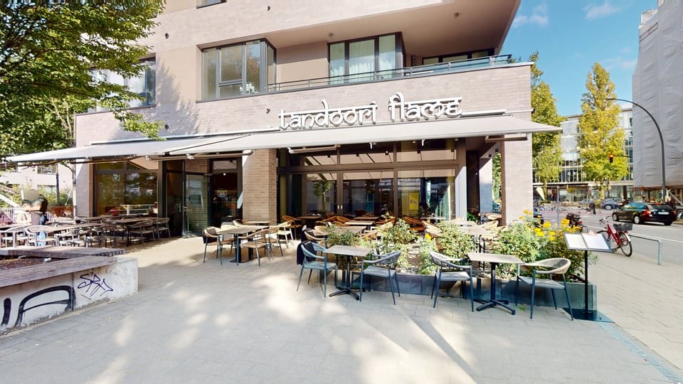
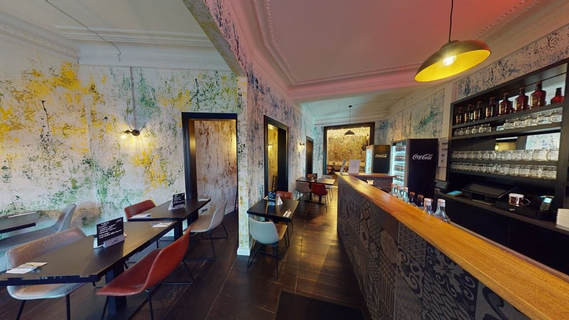
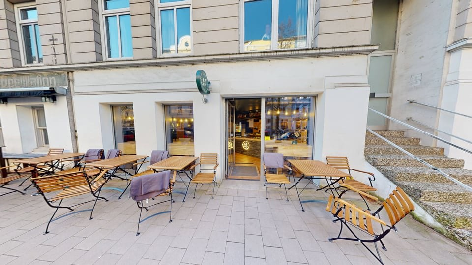
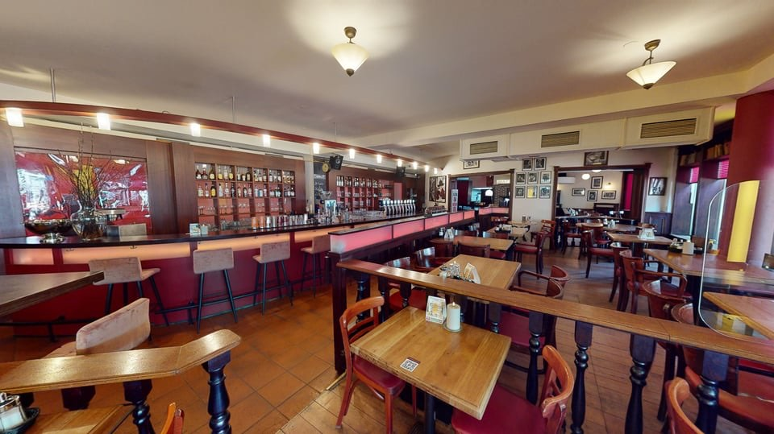

Virtuelle Touren für Restaurants, Cafés & Bars
Gäste erleben dein Lokal, bevor sie kommen: Ambiente, Bar und Eventflächen im begehbaren 360°-Rundgang. Für mehr Reservierungen, Eventanfragen und Sichtbarkeit bei Google.
Festpreis ab 430 € alles inklusive
- ab 430 €Festpreis, alles inklusive
- 4K-Bilderfür Speisekarte & Social Media
- Bei GoogleStreet View auf Wunsch
- Ein Terminvor Ort, meist wenige Stunden
Gäste entscheiden mit den Augen, schon vor der Reservierung

Ambiente verkauft mit
Gastraum, Bar, Terrasse: Gäste spüren die Atmosphäre vorab und entscheiden sich leichter für deinen Tisch.
01 / 04
Genau auf dein Lokal abgestimmt
Restaurant, Café, Bar oder Eventgastronomie: Jedes Lokal hat eigene Schwerpunkte, darauf stelle ich die Aufnahme ein.
Gastraum & Atmosphäre
Einrichtung, Licht und Stimmung kommen begehbar zur Geltung.
Bar- & Thekenbereich
Dein Aushängeschild, ideal für den ersten Eindruck.
Event- & Nebenräume
Für Feiern, Tagungen und Gruppen separat erlebbar.
Terrasse & Außenbereich
Sommerplätze und Outdoor-Flächen im Rundgang.
Live-Beispiel: Google Street View
D'oro Ristorante in Cuxhaven. Mit Maus oder Finger umsehen, so sieht dein Lokal bei Google aus.
Tour & 4K-Bilder: alles inklusive ab 430 €
Ein Festpreis nach Fläche. Tour, 4K-Bilder und 12 Monate Hosting immer enthalten, keine versteckten Kosten.
- bis 80 m²z. B. Café, Bar, Imbiss430 €
- bis 150 m² Meistgebuchtz. B. Restaurant mit Gastraum540 €
- bis 250 m²z. B. Restaurant mit Nebenraum oder Terrasse690 €
- bis 350 m²z. B. Große Gastronomie mit Eventfläche810 €
Immer dabei
- 360°-Rundgang in 4K
- Hochwertige 4K-Bilder mit vollen Nutzungsrechten
- Dollhouse- & 3D-Modell
- 2D-Grundriss
- Google Street View-Integration
- Möbel digital entfernen
Bis 500 m² 950 €, darüber individuelles Angebot. Anfahrt bis 30 km um Hamburg inklusive.
Richtpreis und Terminvorschlag innerhalb von 24 Stunden an Werktagen.
Virtuelle Touren aus Restaurants, Cafés & Bars
Rundgänge aus Restaurants, Cafés und Bars. Tour anklicken, sie startet direkt hier.




Lösungen für deine Branche
Bereit, dein Lokal online begehbar zu machen?
Schreib mir kurz Art und Größe deines Lokals, du bekommst zeitnah einen Richtpreis. Tour und 4K-Bilder inklusive, ab 430 €.
Richtpreis und Terminvorschlag innerhalb von 24 Stunden an Werktagen.
Gut zu wissen
Lohnt sich eine virtuelle Tour für ein Restaurant oder Café?
Ja. Gäste informieren sich vor dem Besuch online. Ein echter Eindruck vom Lokal schafft Vertrauen und bringt mehr Reservierungen.
Stört die Aufnahme den laufenden Betrieb?
Nein. Aufgenommen wird außerhalb der Öffnungszeiten oder in ruhigen Phasen, meist in wenigen Stunden.
Kann die Tour bei Google Maps eingebunden werden?
Ja. Auf Wunsch binde ich die Tour in dein Google-Unternehmensprofil und Street View ein.
Eignet sich die Tour auch für Event- und Feieranfragen?
Besonders. Wer eine Feier plant, will die Räume vorab sehen. Die Tour zeigt sie rund um die Uhr, das spart Rückfragen und bringt Buchungen.

„Ich scanne selbst vor Ort. Tour und Bilder bekommst du meist wenige Tage später.“
Dein Ansprechpartner aus Hamburg, im Einsatz in ganz Deutschland
Ob Hamburg, Lübeck, Berlin oder Völklingen: Ich scanne dort, wo dein Objekt steht. Anfahrt bis 30 km um Hamburg inklusive.
3D-Rundgang und 4K-Fotos aus einer Hand, persönlich und zuverlässig.
Saman Kaboli · Inhaber
Über mich